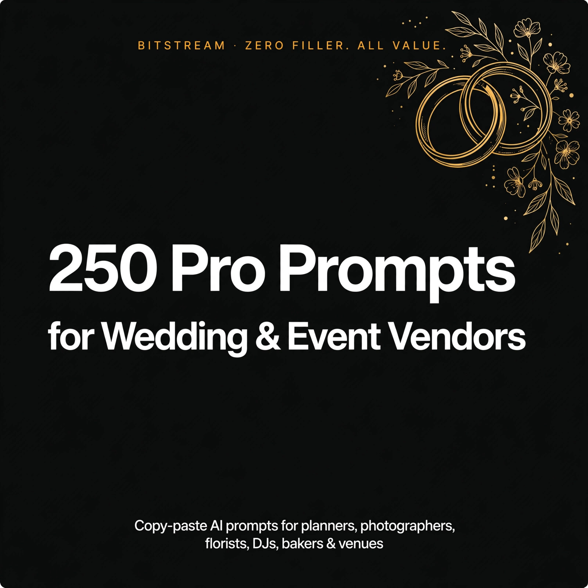

BITSTREAM · ZERO FILLER. ALL VALUE.
250 Pro Prompts
for Wedding & Event Vendors
250 copy-paste AI prompts for planners, photographers, florists, DJs, bakers & venues.
Open a free AI tool, paste, fill in the brackets, done.
PRO PACK · $14.99
How to use this pack (60 seconds)
- Open a free AI tool — ChatGPT (chatgpt.com), Claude (claude.ai), or Gemini (gemini.google.com). No account tricks, no paid plan needed.
- Copy any prompt and replace the [BRACKETED] parts with your details — your service type, the couple's info, your city, your rates.
- Be specific. Your specialty, the wedding date, the budget range, the sticking point — specifics in, quality out. "Write a contract" gets a generic draft. "Draft a photography contract for a $2,800 eight-hour wedding package in Tampa with a 30% non-refundable deposit" gets a usable starting point.
- Treat the first answer as a draft. Reply with "make it warmer," "shorter," or "add an upsell option" until it sounds like you.
- Sanitize before you paste. Never feed real client names, private contract terms, or exact pricing into a public AI tool — use placeholders or your approved business AI.
Rule 1 — You sign it, you own it. AI drafts, you edit. Every email, proposal, and contract gets your eyes and your judgment before it goes to a client.
Rule 2 — Contracts need a lawyer, not just AI. The contract prompts give you a strong starting draft — your attorney reviews the final version before anyone signs.
Rule 3 — One workflow at a time. Don't overhaul your whole business today. Pick one: inquiries, consultations, or follow-ups — and start there.
1 · Inquiry Response & Lead Qualification
Respond to new inquiries in minutes, screen out tire-kickers, and qualify budget, date, and fit before you invest hours.
PROMPT 001
Speed-to-lead response template
Write a warm, professional first reply to a wedding inquiry that came in [2 hours] ago. The couple asked about [your service] for [their date]. Include: a personal greeting, one line showing I read their message, [2 questions] to qualify them, and a clear next step. Under 150 words, friendly, not salesy.
PROMPT 002
Inquiry triage checklist
Give me a 10-point checklist to triage a new [wedding inquiry] in under 5 minutes. Cover: date availability, budget signals, location fit, timeline urgency, and red flags. Format as checkboxes I can run through for every [my specialty: photography] lead that lands in my inbox.
PROMPT 003
Budget qualifier email
Write a polite email that qualifies a couple's budget before I offer a consultation. My [service] starts at [your base rate]. Ask about their budget range for [my category] in a way that feels helpful, not interrogating, and give them an easy out if we're not aligned.
PROMPT 004
Date-availability reply
Write a reply confirming I am available on [wedding date] for [your service]. Include: excitement about their date, [2 qualifying questions], and a link-style call to action to book a [20-minute] call. Under 120 words.
PROMPT 005
Polite decline template
Write a gracious decline for an inquiry I can't take: the wedding is outside [my service area]. Thank them, explain briefly, and refer them to [2 referral options] so the no still feels helpful. Warm tone, under 100 words.
PROMPT 006
Waitlist offer script
Write a message offering a waitlist spot to a couple whose date [wedding date] is already booked for my [service]. Explain how the waitlist works, what happens if the date opens, and ask for [their phone number] to hold the spot. Positive and professional.
PROMPT 007
Ghosted lead follow-up
Write a follow-up email to a couple who inquired about [your service] for [their date] but haven't replied in [7 days]. Friendly, zero guilt-trip, one question to re-engage them, and a clear next step. Under 100 words.
PROMPT 008
Slow-responder text nudge
Write a short text message (under 40 words) nudging a warm lead who went quiet after I sent [my pricing]. Casual, warm, and gives them a one-tap reply option. For a [wedding vendor] texting from a business number.
PROMPT 009
Price-shopper screener
Give me [5 questions] that separate price shoppers from serious buyers for [my service], plus what a good vs. weak answer sounds like for each. I want to spot fit fast without sounding like I'm gatekeeping.
PROMPT 010
Red-flag checklist
List [12] red flags in wedding inquiries specific to [my specialty] — the phrases, requests, or behaviors that predict nightmare clients. For each flag, give me one diplomatic probing question to confirm before I walk away.
PROMPT 011
Lead scoring rubric
Build a simple 1-to-5 lead scoring rubric for my [wedding business] using these criteria: [budget fit, date desirability, responsiveness, vision alignment]. Define what each score means and what action I take at each tier, from instant consult invite to archive.
PROMPT 012
Missed-call reply template
Write a text I can send within minutes of missing a call from an unknown number that is likely a [wedding inquiry]. Apologize briefly, identify my [business name and service], and ask the two fastest qualifying questions. Under 60 words.
PROMPT 013
Instagram DM inquiry reply
Write a reply to an Instagram DM asking about [your service] and pricing. Keep it conversational, answer without dumping my full price list, ask for [their date and venue], and move the conversation to email or a call. Under 80 words.
PROMPT 014
After-hours auto-reply
Write an after-hours auto-reply for wedding inquiries that arrive after [9 PM]. Set expectations that I reply within [one business day], show enthusiasm, and include [2 things] they can send me now so I can reply faster tomorrow.
PROMPT 015
Referral intake message
Write a warm intake message for a couple referred by [past client name] inquiring about [your service] for [their date]. Mention the referrer naturally, skip the cold-qualifying tone, and fast-track them to a consultation with [one question] first.
PROMPT 016
Vision opener questions
Give me [6] open-ended questions that get a couple talking about their wedding vision for [my service area: florals] — questions that reveal style, priorities, and budget without me asking "what's your budget" outright.
PROMPT 017
Partial-inquiry follow-up
Write a follow-up for an inquiry missing key details: they didn't include [their date, venue, or guest count]. Ask for exactly what's missing for my [service] quote, explain why I need it in one line, and keep it breezy. Under 90 words.
PROMPT 018
Same-date conflict email
Write an honest email telling a couple I'm already booked on [their wedding date] for [your service]. Offer [2 alternatives]: my waitlist or a trusted colleague referral with [their name]. Leave the door open for future events.
PROMPT 019
Travel qualifier questions
The wedding is [150 miles] from my base in [your city]. Give me the exact questions to ask about travel logistics for [my service] — load-in access, overnight needs, and travel fees — plus a reply template that quotes the travel fee confidently.
PROMPT 020
Vendor-team check
Write [5] questions to learn who else the couple has booked (planner, photographer, venue) for their [date] wedding, and explain in one line each why knowing this helps me deliver better [your service]. Frame it as collaboration, not nosiness.
PROMPT 021
Budget mismatch exit
Write a kind exit email when a couple's budget of [their budget] is far below my [minimum rate] for [your service]. No shame, no lecture — thank them, suggest [one realistic alternative], and invite them back for future events.
PROMPT 022
Calendar-link booking message
Write a short message sending my booking link for a [20-minute] discovery call about [your service]. Include: why the call helps them, what we'll cover, and a soft nudge to pick a time within [48 hours] since their date [wedding date] is popular.
PROMPT 023
FAQ answer block
Write concise, friendly answers to these [5] questions I get on every inquiry about [your service]: [list the questions]. Each answer under 50 words, warm tone, ending each with a tiny nudge toward booking a call.
PROMPT 024
Closing-the-loop email
Write a final "closing the loop" email to a lead who went dark after [two follow-ups] about [your service] for [their date]. Graceful, professional, leaves the door open, and asks for a simple yes/no so I can archive or re-engage cleanly.
PROMPT 025
Lost-lead post-mortem
Analyze why these [3] recent leads didn't book my [service]: [paste anonymized notes, no real names]. Identify the pattern, tell me the one thing to change in my inquiry process, and draft the exact fix as a template I can reuse.
2 · Consultations & Discovery Calls
Prep like a pro, ask questions that reveal what couples really want, run the call with confidence, and follow up until they book.
PROMPT 026
Pre-call research checklist
Give me a 15-minute pre-call research checklist for a discovery call with [couple's names] about [your service]. Cover: their venue, wedding date, social profiles, style clues, and [3] personalized talking points I can open with.
PROMPT 027
Discovery question bank
Write [20] discovery questions for a [my specialty: DJ] consultation, grouped into: vision, logistics, budget, and decision process. Order them so the conversation flows naturally from dreaming to details.
PROMPT 028
Call agenda outline
Outline a tight [30-minute] discovery call agenda for [your service]. Break it into timed blocks: rapport, discovery, explaining my process, pricing preview, and next steps — with the goal of the call stated up front.
PROMPT 029
Opening two-minute script
Write a word-for-word script for the first 2 minutes of a discovery call for [my service]. Warm, confident, sets the agenda, and includes one personal touch referencing [something from their inquiry] so they feel heard immediately.
PROMPT 030
Story-digging questions
Give me [8] questions that get a couple telling their story — how they met, the proposal, what matters most about [their wedding date] — so I can connect my [service] to their emotions, not just their logistics.
PROMPT 031
Budget conversation script
Write a natural, non-awkward script for bringing up budget on a discovery call for [your service]. Include: the transition line, how to ask their range for [my category], and what to say if they dodge the question twice.
PROMPT 032
Early-stage browser response
Write a response for when a couple says they're "just looking around" on a consult for [your service], [10+ months] out from their date. Stay helpful, position early booking as an advantage, and give them one reason to keep talking to me now.
PROMPT 033
Plain-language service explainer
Explain my [service and process] the way I'd say it on a call to a couple who knows nothing about [my industry]. No jargon, under 150 words, and end with the one thing that makes my approach different.
PROMPT 034
Objection response one-pager
Write calm, confident responses to my [3] most common objections: [list them, e.g. "too expensive," "we're DIYing part of it," "we need to think"]. Each response under 60 words, never defensive, each ending with a question that keeps the conversation moving.
PROMPT 035
Call notes template
Build a structured call-notes template for [my specialty] consultations with sections for: couple details, vision keywords, logistics, budget signals, concerns raised, and next steps. Include a 3-line summary block I fill in right after hanging up.
PROMPT 036
Post-call thank-you email
Write a thank-you email to send within [2 hours] of a discovery call about [your service]. Reference [one personal detail from the call], recap the next step we agreed on, and attach-style mention that the proposal is coming by [tomorrow].
PROMPT 037
No-show follow-up
Write a gracious follow-up for a couple who missed our scheduled consultation about [your service] for [their date]. No guilt, assume positive intent, offer [2] new times, and one line that makes rescheduling feel easy.
PROMPT 038
Think-it-over follow-up
Write a [3-day] check-in email for a couple who said they "need to think about it" after a consult for [your service]. Add one piece of value (a tip, a photo, an idea for [their venue]), then a soft nudge toward deciding.
PROMPT 039
Missing-partner script
Write what to say when only one partner shows up to the discovery call for [your service]. Keep it warm, get what I need from the partner present, and set up a [10-minute] follow-up that includes the missing partner before any proposal goes out.
PROMPT 040
Virtual call setup checklist
Give me a tech and environment checklist for running discovery calls over [Zoom] as a [wedding vendor]: camera, lighting, background, screen-share assets to have ready, and a [2-minute] pre-call routine so I look polished every time.
PROMPT 041
Client persona guide
Describe [3] buyer personas I meet in [my specialty] consults — e.g. the detail planner, the vibe-led dreamer, the budget analyst. For each: how to spot them in the first 5 minutes and the one question type that wins each of them over.
PROMPT 042
Fit decision matrix
Build a post-call fit scorecard for [my service] with [5] criteria (budget, timeline, communication style, scope realism, gut feeling). Define the score that means "send proposal," "send with caution," and "politely pass."
PROMPT 043
Second-call deep-dive questions
Write [12] deep-dive questions for a second consultation about [your service] — the logistics, family dynamics, and must-haves I didn't cover on call one for their [wedding date] at [venue].
PROMPT 044
Consultation recap template
Write a recap email template summarizing a discovery call for [your service]: what they want, key dates and logistics, the package we discussed at [price], and the decision deadline. Professional, skimmable, with clear next steps.
PROMPT 045
Sanitize-before-you-paste reminder
Write me a reusable privacy checklist for using AI in my [wedding business]: always replace real names with placeholders like [couple's names], strip emails and phone numbers, and generalize venues to [venue type, city] before pasting anything into ChatGPT, Claude, Gemini, or Meta AI.
PROMPT 046
Competitor comparison script
Write a confident, classy response for when a couple says they're also talking to [another vendor type or competitor] about [service]. Differentiate without trash-talking: [3] questions that highlight what makes my approach different.
PROMPT 047
Feeler vs thinker questions
Give me two sets of discovery questions for [my specialty] consults: one set for emotional buyers (feelers) and one for analytical buyers (thinkers). Include how to tell which one I'm talking to within the first [10 minutes].
PROMPT 048
Feasibility sanity check
A couple wants [describe their request] for [their date] with [guest count] guests. Give me the questions to sanity-check feasibility for [my service] on the call, and a kind script for telling them what needs to change if it won't work.
PROMPT 049
Booking close script
Write a natural closing script for the end of a discovery call for [your service] at [quoted price]. Confident, not pushy: summarize fit, ask for the booking directly, and handle a yes, a maybe, and a no in the same script.
PROMPT 050
Call-to-proposal bridge
Write the exact message I send within [24 hours] of a great discovery call, bridging to the proposal for [your service] at [price]. Reference [one thing they were excited about], set expectations for what's in the proposal, and give a decision timeline.
3 · Packages, Pricing & Proposals
Build packages couples want, price with confidence, and write proposals that close — including what to say when the number surprises them.
PROMPT 051
Three-tier package builder
Build good / better / best packages for my [specialty: photography] business. My base rate is [your base rate]. For each tier: name, what's included, the price, and the one line that makes the middle tier the obvious choice.
PROMPT 052
Pricing psychology rewrite
Rewrite my pricing page copy for [your service] using pricing psychology: anchor high, charm pricing, and value-first language. My packages are [list package names and prices]. Keep my voice: [warm and professional].
PROMPT 053
Proposal outline template
Outline a one-page proposal for [your service] at [quoted price] for a [wedding date] wedding. Sections: personalized opener, recommended package, investment breakdown, what's included, next steps, and expiry. Skimmable and elegant.
PROMPT 054
Over-budget response script
Write a calm, confident reply for when a couple says my [quote amount] for [your service] is more than they expected. Validate, re-anchor on value with [2 specifics], and offer [one] legitimate way to adjust scope — never apologize for my pricing.
PROMPT 055
Value-stack list
Write a value stack for my [package name] at [price]: list everything included in [my service] as individual line items with realistic dollar values, then total it to show the package is worth [X%] more than the price.
PROMPT 056
Premium anchor strategy
Design a premium anchor package for my [specialty] business priced at [2x my average booking]. Make it genuinely luxurious (not filler), and explain where to position it in my proposal so my core [middle package] looks like the smart pick.
PROMPT 057
Add-on menu builder
Create [8] add-ons for my [service] packages, each priced between [low] and [high]. For each add-on: name, one-line pitch, and the perfect moment to offer it (inquiry, consult, or post-booking).
PROMPT 058
Discount without devaluing
Write language offering a [10%] [off-season] incentive on my [service] without cheapening my brand. Frame it as a bonus or limited availability perk, not a price cut, and include the exact sentence to use in the proposal.
PROMPT 059
Payment plan proposal
Draft a payment plan splitting [total amount] for [your service] into [4] payments tied to milestones (booking, [90 days] out, [30 days] out, wedding week). Write the client-facing explanation that makes the plan feel easy and professional.
PROMPT 060
Proposal cover letter
Write a proposal cover email for [couple's names] about [your service] for [their wedding date]. Reference [one personal detail] from our call, summarize the recommended package in two lines, and close with a clear decision step.
PROMPT 061
Package comparison chart
Build a side-by-side comparison table for my [3] [service] packages: [package names]. Rows are features, columns are packages, with checkmarks, and a one-line "best for" label under each column header guiding them to [my recommended tier].
PROMPT 062
Rush fee calculator
Create a rush-fee structure for [my specialty] bookings made under [60 days] before the wedding. Give me [3] tiers by urgency, the percentage or flat fee for each, and the exact sentence explaining it to the couple without sounding punitive.
PROMPT 063
Off-season pricing strategy
Design an off-season pricing strategy for [January through March] for my [service] in [your city]. Include: the incentive structure, how to market it without training clients to wait for discounts, and the cutoff date.
PROMPT 064
Minimum spend wording
Write firm-but-friendly website and inquiry language stating my [minimum spend] for [your service]. Make it sound like a quality standard, not a barrier, and add a one-line redirect for couples below it toward [an alternative option].
PROMPT 065
Price increase announcement
Write an announcement that my [service] rates are increasing [15%] starting [date]. Positive framing, thank existing clients, give current inquiries a [30-day] grace period, and provide the email version plus a short social post.
PROMPT 066
Custom quote builder
Build a custom quote for [your service] from these client answers: [paste their requirements — use placeholders, no real names]. Itemize each element with pricing, total it, and add [2] optional upgrades with a one-line pitch each.
PROMPT 067
Upsell timing script
Write the exact script and timing for offering [add-on name] to a couple who already booked my [base package]. Tell me when to bring it up (days after booking? at the final consult?), the message itself, and how to take no gracefully.
PROMPT 068
Price-match response
Write a confident reply when a couple asks me to match a competitor's lower quote of [amount] for [comparable service]. Don't trash the competitor, don't cave — re-anchor on my [2 differentiators] and offer one alternative that protects my margin.
PROMPT 069
Proposal expiry sequence
Write a [3-touch] follow-up sequence for a proposal that expires in [7 days] for [your service] at [price]. Touch 1: value reminder. Touch 2: urgency + date risk. Touch 3: graceful close. Each under 100 words.
PROMPT 070
Testimonial proof block
Write a testimonials section for my proposal using these [3] client reviews: [paste reviews, anonymized]. Pick the strongest line from each, add a one-line intro tying them to [the couple's biggest concern], and format for a proposal page.
PROMPT 071
Scope-guard package wording
Write package-scope language for my [service] that prevents [common scope creep: e.g. extra hours, added locations]. Friendly but firm, placed in the proposal's "what's included" section, with the exact line for quoting additional scope at [your hourly rate].
PROMPT 072
Travel fee structure
Create a travel fee structure for my [service]: free within [50 miles] of [your city], then per-mile or flat tiers beyond that, plus overnight and meal provisions. Write the client-facing paragraph that states it plainly in quotes.
PROMPT 073
Deposit framing copy
Write copy that frames my [30%] deposit for [your service] as date protection and commitment — not a fee. Include the sentence for the proposal, the email version, and how to answer "is the deposit refundable" in [one line].
PROMPT 074
Referral credit offer
Write a referral offer for past [service] clients: [dollar amount] credit for every booked referral, explained in a short email they can forward. Include the forwarding-friendly blurb describing my [service] in two sentences.
PROMPT 075
Proposal tone rewrite
Rewrite this proposal section in a warmer, more personal tone without losing professionalism: [paste the section]. It's for [your service] and a [wedding date] wedding. Keep all facts and prices identical — only the voice changes.
4 · Contracts & Terms
Draft clear, professional contract language for deposits, cancellations, and payments — AI drafts only, always reviewed by a licensed attorney before use.
PROMPT 076
Deposit clause draft
Draft neutral deposit-clause language for a [photography] contract: a [30%] non-refundable retainer due at signing to reserve [wedding date]. Plain language a couple can understand. This is an AI draft only — I will have a licensed attorney review the final contract before use. Do not give legal advice.
PROMPT 077
Payment schedule draft
Draft a payment-schedule clause for my [service] contract: [30%] at booking, [40%] at [90 days] out, balance due [14 days] before [wedding date]. Include what happens if a payment is missed. AI draft only — a licensed attorney will review the final contract. No legal advice, just clause language.
PROMPT 078
Cancellation policy draft
Draft a cancellation-policy clause for a [wedding vendor] contract covering client cancellation at [180, 90, and 30 days] out — what is owed at each stage. Fair, plain-spoken language. AI draft only; I will have a licensed attorney review the final contract before use. Do not provide legal advice.
PROMPT 079
Postponement clause draft
Draft a postponement clause for my [service] contract: one date change allowed within [12 months] subject to availability, with a [rescheduling fee]. Distinguish postponement from cancellation in the wording. AI draft only — licensed attorney review required before use. No legal advice.
PROMPT 080
Force majeure clause draft
Draft a force majeure clause for a [wedding vendor] contract covering events like natural disasters and government restrictions affecting [wedding date]. State each party's options if the event can't proceed. AI draft only; I will have a licensed attorney review the final contract. Do not give legal conclusions.
PROMPT 081
Scope of services clause
Draft a scope-of-services clause describing exactly what's included in my [package name] for [service]: [list deliverables]. Add language noting anything beyond this scope is quoted separately. AI draft only — a licensed attorney will review the final contract before use. No legal advice.
PROMPT 082
Overtime rate clause draft
Draft an overtime clause for my [DJ] contract: coverage ends at [end time], additional time billed at [hourly rate] per [30-minute] increment, payable [that night]. Clear and matter-of-fact. AI draft only; licensed attorney review before use. Do not provide legal advice.
PROMPT 083
Meal and break clause draft
Draft a vendor meal/break clause for a [photography] contract covering [8+ hour] wedding days: one hot meal, timing coordinated with the couple's dinner, and brief breaks that don't interrupt key moments. AI draft only — I will have a licensed attorney review the final contract. No legal advice.
PROMPT 084
Liability limitation draft
Draft a limitation-of-liability clause for my [service] contract capping liability at [the total contract amount], in plain language. AI draft only; I will have a licensed attorney review the final contract before use. Do not give legal advice or state what is enforceable.
PROMPT 085
Indemnification clause draft
Draft a mutual indemnification clause for a [wedding vendor] contract in plain English both sides can understand. Keep it balanced and simple. AI draft only — licensed attorney review required before use. No legal advice or conclusions.
PROMPT 086
Photo release clause draft
Draft a photo/video release clause for my [photography] contract allowing portfolio and social media use of images from [wedding date], with an opt-out option for the couple. Respectful tone. AI draft only; I will have a licensed attorney review the final contract. Do not provide legal advice.
PROMPT 087
Vendor cooperation clause
Draft a vendor-cooperation clause for my [service] contract: the couple will share other vendors' contact info by [30 days] before the wedding and facilitate reasonable coordination. AI draft only — a licensed attorney will review the final contract before use. No legal advice.
PROMPT 088
Backup vendor clause draft
Draft a backup/substitute clause for a solo [wedding vendor] contract: what happens if I'm unable to perform on [wedding date] due to emergency — my obligation to find a qualified substitute and the couple's options. AI draft only; licensed attorney review before use. Do not give legal conclusions.
PROMPT 089
Inclement weather clause
Draft an inclement-weather clause for my [florist] contract covering outdoor installations on [wedding date]: who decides to move or modify designs, timing of the call, and how fees adjust. AI draft only — I will have a licensed attorney review the final contract. No legal advice.
PROMPT 090
Delivery and pickup terms
Draft delivery, setup, and pickup terms for a [baker] contract: delivery window on [wedding date] to [venue], setup responsibilities, and who handles leftover cake and stand returns. AI draft only; a licensed attorney will review the final contract before use. Do not provide legal advice.
PROMPT 091
Late payment clause draft
Draft a late-payment clause for my [service] contract: payments more than [7 days] overdue incur a [late fee], and services may pause until the account is current. Firm but professional. AI draft only — licensed attorney review required before use. No legal advice.
PROMPT 092
Chargeback protection language
Draft contract language for my [wedding business] that documents the couple's authorization of card payments and acknowledgment of the cancellation terms, to support me in a payment dispute. AI draft only; I will have a licensed attorney review the final contract. Do not give legal advice.
PROMPT 093
Termination for cause draft
Draft a termination-for-cause clause for a [wedding vendor] contract: either party may terminate with [written notice] if the other materially fails to perform, with a [14-day] cure period. AI draft only — a licensed attorney will review the final contract before use. No legal conclusions.
PROMPT 094
Non-disparagement clause draft
Draft a mutual non-disparagement clause for my [service] contract covering public reviews and social media after [wedding date], while preserving each party's right to honest factual statements. AI draft only; licensed attorney review before use. Do not provide legal advice.
PROMPT 095
Dispute resolution clause
Draft a dispute-resolution clause for a [wedding vendor] contract: good-faith discussion first, then mediation in [your county, state], before any formal proceedings. Step-by-step plain language. AI draft only — I will have a licensed attorney review the final contract. No legal advice.
PROMPT 096
Plain-English contract summary
Turn my contract's key terms into a one-page plain-English summary for couples booking [your service]: deposit of [amount], payment dates, cancellation terms, and what happens on [wedding date] if plans change. This summarizes my attorney-reviewed contract — AI draft of the summary only, and I'll have my licensed attorney confirm it matches the final contract. No legal advice.
PROMPT 097
Client terms FAQ
Write a client-friendly FAQ answering [8] common questions about my contract terms for [your service]: deposits, refunds, postponements, and final payments. Base answers on my existing terms: [paste your terms]. AI draft only — my licensed attorney reviews the final contract and this FAQ before use. Do not give legal advice.
PROMPT 098
Contract amendment template
Draft a simple contract amendment template for my [wedding business]: fields for original contract date, the change (e.g. adding [extra hours] for [fee]), new total, and signature lines for both parties. AI draft only; I will have a licensed attorney review the final version before use. No legal advice.
PROMPT 099
Retainer vs deposit explainer
Write a short, plain-English explainer I can send couples about the difference between a retainer and a deposit for [your service], and why my [booking payment] works the way it does. Educational tone, no jargon. AI draft only — my licensed attorney reviews the final contract language. Do not give legal advice.
PROMPT 100
Contract assembly checklist
Build a final contract assembly checklist for my [service] bookings: every clause and attachment to include (scope, payment schedule, cancellation, signatures), the order they go in, and a last-pass review list. End with the reminder step: licensed attorney review of the final contract before any client signs. AI-generated checklist only — no legal advice.
5 · Timeline & Logistics Planning
Build bulletproof wedding-day timelines, coordinate vendors, plan load-in and load-out, and always have a backup plan ready.
PROMPT 101
Wedding-day timeline builder
Build a full wedding-day timeline for [couple's names] on [wedding date] at [venue]: getting ready at [time], ceremony at [time], reception ending at [time]. Include buffer blocks and note where my [service] needs to be at each stage. [Guest count] guests.
PROMPT 102
Vendor contact sheet
Build a vendor contact sheet template for a [wedding date] wedding: columns for vendor, contact name, cell number, arrival time, and role. Include [8] standard vendor rows for my [service] coordination plus blank rows.
PROMPT 103
Load-in load-out schedule
Create a load-in / load-out schedule for my [florist] team at [venue] on [wedding date]: arrival, what gets installed in what order, teardown start time, and truck departure. Account for [venue access restrictions].
PROMPT 104
Ceremony cue sheet
Write a minute-by-minute ceremony cue sheet for a [30-minute] ceremony starting at [time]: processional order, music cues for my [DJ] setup, and who signals each transition. Built for [couple's names].
PROMPT 105
Reception run-of-show
Build a reception run-of-show from [cocktail hour time] to [send-off time] for [guest count] guests: entrances, first dance, toasts, dinner service, and dancing blocks. Mark every moment that involves my [service].
PROMPT 106
Photo shot-list timeline
Build a photo shot-list timeline for [couple's names]: getting ready through portraits, fitting [25] must-have shots between a [time] ceremony and a [time] reception entrance. Include family formal grouping order to keep it under [30 minutes].
PROMPT 107
Floral install timeline
Create an install timeline for [45] floral pieces (ceremony arch, [12] centerpieces, bouquets) at [venue] with a [3-hour] access window before guests arrive. Sequence the work for a team of [3] and flag what must be finished first.
PROMPT 108
DJ setup checklist
Write a DJ setup checklist for [venue]: load-in route, power needs, ceremony vs. reception sound zones, backup equipment, and a [60-minute] sound-check window before [guest arrival time]. For a [guest count]-guest wedding.
PROMPT 109
Cake delivery coordination
Write a delivery coordination plan for a [4-tier] wedding cake to [venue] on [wedding date]: delivery window, on-site assembly needs, refrigeration check, and handoff to the [venue coordinator]. Include [2] questions to confirm with the venue first.
PROMPT 110
Getting-ready schedule
Build a getting-ready schedule for [6] people (hair and makeup) finishing by [time] for a [time] ceremony. Stagger start times, build in a [30-minute] buffer, and note when my [photographer] should arrive for detail shots.
PROMPT 111
Shuttle transport plan
Plan guest shuttle logistics between [hotel] and [venue], [20 minutes] apart, for [120] guests. Include: pickup times, number of trips, last-shuttle cutoff, and the announcement wording for the wedding website.
PROMPT 112
Rain plan checklist
Build a rain-plan checklist for an outdoor ceremony at [venue] on [wedding date]: the go/no-go decision time, tent or indoor pivot, how my [service] setup changes, and the exact message to send the couple and vendors when the call is made.
PROMPT 113
Backup equipment list
List the backup equipment I should pack as a [photographer] for a full wedding day: cameras, lenses, batteries, cards, and lighting. For each item, note the failure it covers and pack it in priority order for a [10-hour] day.
PROMPT 114
Day-of emergency kit
Build a day-of emergency kit list for a [wedding planner]: the [25] items that solve the most common wedding-day crises, from fashion fixes to first aid. Group by category and star the 5 I should never be without.
PROMPT 115
Vendor meal coordinator
Write a vendor-meal coordination email to [venue/caterer] for [wedding date]: headcount of [10] vendors, dietary restrictions ([list]), timing that doesn't pull us during key moments, and where we eat. Professional and appreciative.
PROMPT 116
Final walkthrough checklist
Create a final venue walkthrough checklist for [2 weeks] before [wedding date] at [venue]: layout, power, load-in doors, lighting, sound restrictions, and the [10] questions my [specialty] must get answered on site.
PROMPT 117
Week-of confirmation email
Write a week-of confirmation email to [couple's names] for their [wedding date] wedding: confirm arrival time, final headcount of [number], any last details I need for [your service], and a reassuring close. Warm and organized.
PROMPT 118
Timeline lock message
Write a day-before message to the couple and vendor team locking the final timeline for [wedding date]. Include: the locked timeline summary, the [2] things that changed since the last version, and who to text day-of for [my service] issues.
PROMPT 119
Layout description prompt
Turn these layout notes into a clear written description of the reception floor plan for [venue]: [paste notes — tables, dance floor, DJ booth, cake table positions]. Written so any vendor can picture the room without seeing the diagram.
PROMPT 120
Multi-location logistics plan
Plan logistics across [3] locations — getting ready at [hotel], ceremony at [church], reception at [venue] — on [wedding date]. Include: drive times, what travels with my [service] team, and the buffer between each move.
PROMPT 121
Vendor arrival order
Sequence vendor arrivals at [venue] on [wedding date] from first to last: rentals, florals, my [service] team, and [4] others. Assign each a time slot in the [4-hour] setup window so nobody trips over each other.
PROMPT 122
Teardown assignment sheet
Build a teardown assignment sheet for the end of the night at [venue]: who removes what (my [service] gear, rentals, florals, personal items), the order of operations, and the hard out-by time of [time]. Include a lost-and-found step.
PROMPT 123
Timeline buffer calculator
Calculate smart buffer time for this wedding-day schedule: [paste draft timeline]. Flag every transition that's too tight for [guest count] guests, suggest specific buffer minutes to add, and show me the revised timeline.
PROMPT 124
Rehearsal agenda
Write a [45-minute] rehearsal agenda for [couple's names] at [venue] the day before [wedding date]: lineup order, two full walk-throughs, cue confirmations with my [DJ] setup, and the 5 questions to resolve before we leave.
PROMPT 125
Post-event wrap checklist
Build a post-event wrap checklist for after [wedding date]: gear inventory, final vendor thank-yous, gallery or delivery timeline message to the couple, review request, and the [3] bookkeeping tasks to close out my [service] booking.
6 · Client Communication & Boundaries
Scripts and templates that keep clients happy while protecting your time, scope, and sanity.
PROMPT 126
Polite scope-creep pushback
A client asked for [extra service outside the contract] for free. Write a warm but firm reply that: reminds them what their package includes, quotes a fair price for the add-on, and gives them an easy yes. Professional, no guilt-tripping.
PROMPT 127
Late-reply nudge
Write a friendly follow-up email to [couple's names] who haven't answered my [questionnaire / design call / timeline approval] in [number] days. Include one clear deadline and what happens if I don't hear back.
PROMPT 128
Payment reminder sequence
Draft a 3-email sequence for an overdue [deposit / installment / final payment] of [amount] from [couple's names]. Escalate in tone from friendly to firm across the three, ending with the consequence of non-payment.
PROMPT 129
Saying no to last-minute demands
Write a script for declining a last-minute request to [add a service / change the timeline / move the date] just [number] days before [wedding date]. Offer one realistic alternative I can actually deliver.
PROMPT 130
Firing a nightmare client politely
Draft a professional termination email for a client relationship that isn't working because [reason: repeated disrespect / scope abuse / unpaid invoices]. State the effective date, refund or final-invoice terms per my contract, and wish them well. Zero drama.
PROMPT 131
Timeline deadline email
Write an email to [couple's names] setting a hard deadline of [date] for [final guest count / song list / shot list], explaining in plain language why I can't do my job without it and what happens if it arrives late.
PROMPT 132
Contract boundary reminder
A client is asking for [hours / deliverables / coverage] beyond what's in the signed contract. Write a short, non-defensive email that points back to the agreement and offers the upgrade path with pricing.
PROMPT 133
Unresponsive client escalation
Create a 2-step escalation: a final polite email, then a firmer one, for [couple's names] who have gone silent [number] weeks before [wedding date] with [critical item] still missing. Include a clear "respond by" date.
PROMPT 134
Rush-fee announcement script
Write a calm, professional script explaining my rush fee of [amount or percentage] for bookings made within [number] days of the event. It should feel fair, not punishing, and make the fee sound like the cost of prioritizing them.
PROMPT 135
Final-numbers confirmation email
Draft an email collecting final details from [couple's names] for [wedding date]: guest count, venue access time, key contacts. Make it easy to reply to in under 2 minutes — bullet list, no paragraphs of explanation.
PROMPT 136
Referral-to-colleague redirect
Write a warm referral email introducing [couple's names] to [colleague's name and business] because [I'm booked / it's outside my specialty / not a good fit]. Make both parties feel good about it.
PROMPT 137
Weekend boundary email
Draft an auto-reply and a short client-facing policy note explaining I don't answer emails [Friday evening–Sunday / my days off] during wedding season, with a [24/48-hour] response promise on business days.
PROMPT 138
Inappropriate request decline
Write a gracious decline for a request I won't do: [discount below my minimum / free work for exposure / service outside my expertise]. Keep the door open for a future fit without caving.
PROMPT 139
Final payment overdue follow-up
The final payment of [amount] from [couple's names] is [number] days overdue and the wedding is [number] days out. Write a firm email citing the contract clause and stating I can't provide services until it's resolved.
PROMPT 140
Vendor-team boundary letter
Draft a brief, professional note to the other vendors on [couple's names]' wedding team clarifying my role boundaries as [my service]: what I'll handle, what I need from them, and how to reach me day-of.
PROMPT 141
Change-request policy template
Write a one-page change-request policy I can attach to contracts: how clients request changes to [my service], the [number]-day cutoff before the event, and the fee schedule for changes after that cutoff.
PROMPT 142
Difficult phone call script
I need to call [couple's names] about [a problem: missed payment / contract issue / service concern]. Write a call script with an opener, the key points in plain language, and a calm close — plus what to say if they get upset.
PROMPT 143
After-hours auto-reply template
Write a friendly auto-reply for inquiries received after [time] or on [my off days]. It should set expectations ([when I'll respond]), link my [pricing guide / FAQ], and still feel personal, not robotic.
PROMPT 144
Revision-limit email
A client has exceeded their included revisions on [design / gallery / menu / playlist]. Write a kind but clear email stating the limit, what extra rounds cost ([amount] each), and a deadline to approve the current version.
PROMPT 145
Refund-request response
Write a response to a client requesting a refund because [reason]. Reference my contract's refund/cancellation terms, offer what I can in good faith, and hold the line where I must. Calm and professional.
PROMPT 146
Scope-confirmation recap email
After a planning call with [couple's names], draft a recap email confirming exactly what [my service] includes, the agreed timeline, and the total price — written so it prevents "but I thought you were doing..." misunderstandings later.
PROMPT 147
Kind but firm FAQ answers
Write short, friendly FAQ answers for my [my service] business covering: discounts, payment plans, holding dates without a deposit, bringing my own [assistant / team member], and working with a friend's vendor. Each answer under 60 words.
PROMPT 148
Family-interference script
Write a diplomatic script for when a parent or family member of [couple's names] tries to redirect [my service: photography / planning / music] decisions day-of. It should redirect authority back to the couple without offending anyone.
PROMPT 149
No-show consultation follow-up
A prospect missed our consultation about [my service] on [date]. Write a 2-touch follow-up: one same-day check-in and one 3-days-later email that either rebooks them or politely closes the loop.
PROMPT 150
Graceful "I'm booked" decline
Write a warm decline for an inquiry on [date] when I'm already booked. Include a referral to [trusted colleague], an invitation to check another date, and a reason to join my [email list / follow my Instagram].
7 · Marketing & Portfolio Copy
Website, social, and listing copy that books clients instead of just looking pretty.
PROMPT 151
Website hero headline rewrite
Rewrite the hero headline for my [my service: photography] website in [your city]. Current headline: [paste it]. Give me 5 options that speak to the client's dream outcome, not my gear or process. Under 12 words each.
PROMPT 152
Services page copy
Write services-page copy for my [package name] package at [price]. Cover: who it's for, what's included, the experience, and a soft call to book a call. Warm, confident, no hype. About 250 words.
PROMPT 153
Instagram bio rewrite
Rewrite my Instagram bio for my [my service] business in [your city]. Include: what I do, who I serve, my booking status, and a CTA. 150 characters max. Give me 3 versions: professional, playful, and luxury.
PROMPT 154
Styled-shoot pitch email
Draft a pitch email to [photographer / venue / publication name] proposing a styled shoot with the concept [theme: modern desert elopement]. Include the creative vision in 3 sentences, who's already on board, and what each vendor gets out of it.
PROMPT 155
SEO blog ideas list
Give me 15 SEO-friendly blog post titles for a [my service: florist] in [your city] that couples actually search for. For each, add the target keyword phrase and one sentence on what the post should cover.
PROMPT 156
About page draft
Draft my About page as a [my service] in [your city]. Include: my story in 3 short paragraphs, 3 fun facts, and a closing line that makes couples want to work with me. First person, conversational, zero corporate speak.
PROMPT 157
Vendor listing profile
Write a vendor directory profile for [The Knot / WeddingWire / Zola] for my [my service] business. Max [word limit] words. Lead with what makes me different in [your city], end with a booking CTA.
PROMPT 158
Before-and-after caption set
Write 5 Instagram captions for before-and-after posts showing [transformation: a bare venue vs. the finished reception]. Each under 100 words, each with a different angle: storytelling, process, humor, luxury, and client quote.
PROMPT 159
Google Business description
Write a 750-character Google Business description for my [my service] company in [your city]. Naturally include [3 local keywords] and end with what a couple should do next.
PROMPT 160
Reels hook ideas
Give me 12 Reel hooks (first 3 seconds, spoken or on-screen text) for a [my service: DJ] targeting engaged couples. Each hook must create curiosity or call out a specific pain point. One line each.
PROMPT 161
Testimonial highlight captions
Turn this client review into 3 different Instagram captions: [paste the review]. One short and punchy, one storytelling, one with a booking CTA. Keep my voice: [describe your tone].
PROMPT 162
Price guide intro copy
Write the intro page of my [my service] pricing guide: why I price the way I do, what affects cost, and how the booking process works. Make [your base rate] feel like an investment, not an expense. About 200 words.
PROMPT 163
"Why hire a pro" post
Write an Instagram post explaining why couples shouldn't DIY [my service: floral design] for their wedding. Use one real story or example, stay kind (no shaming), and end with a soft CTA to my consults.
PROMPT 164
Pinterest board descriptions
Write keyword-rich Pinterest board descriptions (2 sentences each) for 8 boards covering [my service] topics like [example board topic]. Include location [your city] naturally where it fits.
PROMPT 165
Email newsletter welcome
Write a welcome email for new subscribers to my [my service] list. Introduce me, set expectations for what they'll get ([frequency]), and deliver the promised freebie: [lead magnet title].
PROMPT 166
Brand voice statement
Help me define my brand voice in 5 bullet points: 3 adjectives that describe how I sound, 2 I never sound like, and an example sentence for my [my service] business in [your city]. Then apply it to rewrite: [paste a caption or email].
PROMPT 167
FAQ page copy
Write FAQ-page answers for my [my service] business: pricing, travel fees for [your city] area, booking timeline, deposits, and working with other vendors. Plain language, each answer under 75 words.
PROMPT 168
"Booked out" waitlist copy
Write waitlist page copy for when my [peak season / year] books are full. Make scarcity feel genuine, explain how the waitlist works, and offer [off-peak dates / associate team / next-year priority] as alternatives.
PROMPT 169
Mini-session promo copy
Write promo copy for my [mini session / pop-up offering]: [what it is] at [price] on [date] in [your city]. Include the offer, the deadline, the scarcity ([number] spots), and a clear booking link CTA.
PROMPT 170
Pricing transparency post
Write an honest Instagram post explaining why my [my service] starts at [your base rate]. Break down where the money goes in plain terms so couples understand the value. Educational, not defensive.
PROMPT 171
Behind-the-scenes captions
Write 6 behind-the-scenes Instagram captions for [my service] showing the unglamorous side: [setup at 6am / loading the van / tasting trials]. Mix humor and expertise; each under 80 words.
PROMPT 172
Vendor spotlight post
Write a vendor-spotlight Instagram post featuring [vendor name and service] from [couple's names]' wedding. Tag-ready, genuinely complimentary, and written so they'll want to repost it.
PROMPT 173
Award announcement post
Write a humble-but-proud announcement that my [my service] business won [award / badge: Best of Weddings 2027]. Thank clients and vendors, and turn it into a reason to book for [next year].
PROMPT 174
Seasonal promo copy
Write promo copy for a [season] booking incentive: [offer, e.g. free add-on for winter weddings] for couples booking [my service] before [deadline]. Urgent but classy, no fake countdown energy.
PROMPT 175
Tagline brainstorm
Brainstorm 15 taglines for my [my service] brand in [your city]. My style is [e.g. modern romantic / bold and fun / timeless luxury]. Mark your top 3 and tell me why each one works.
8 · Reviews, Referrals & Repeat Business
Turn happy couples into a steady stream of reviews, referrals, and repeat bookings.
PROMPT 176
Review-request email
Write a review-request email to [couple's names] [number] days after their wedding. Include direct links to [Google / The Knot / WeddingWire], make it take under 2 minutes, and add one line they can copy-paste if they're stuck.
PROMPT 177
Review-request text script
Write a short text message asking [couple's names] for a Google review of my [my service] work. Under 40 words, warm tone, with a link placeholder [review link] and a reason it matters to my small business.
PROMPT 178
Reply to a 5-star review
Write a reply to this 5-star review that feels personal, not canned: [paste the review]. Mention [specific detail from their wedding] and naturally include [your city] and [my service] for SEO.
PROMPT 179
Reply to a negative review
Draft a professional public reply to a [1/2-star] review claiming [the complaint]. Acknowledge, take responsibility where fair, correct the record calmly where needed, and invite them to resolve it privately. No defensiveness.
PROMPT 180
Referral program announcement
Write an announcement for my client referral program: past clients get [reward: $100 credit / free mini session] for every booked referral. Include the rules, how to refer, and make it feel generous, not transactional.
PROMPT 181
Past-client check-in email
Write a check-in email to a couple I served [1 year] ago: [couple's names], married on [wedding date]. Genuine, not salesy — then a soft mention that I love referrals and anniversary sessions.
PROMPT 182
Vendor referral intro email
Draft an intro email referring [couple's names] to [vendor name] for [service they need]. Say why I trust this vendor with a specific example, and CC both parties with a clear next step.
PROMPT 183
Thank-you for referrals
Write a thank-you note to [past client's names] who just sent me a booked referral. Include their [referral reward], make them feel like insiders, and ask permission to keep them on my VIP referrer list.
PROMPT 184
Anniversary rebooking pitch
Write a pitch to [couple's names] for an anniversary session [1/5/10 years] after their wedding. Reference a favorite moment from [wedding date], describe the session experience, and include pricing at [amount].
PROMPT 185
Baby shower rebooking pitch
Draft a warm outreach to [couple's names] offering my [my service: planning / florals / baking] for their upcoming baby shower. Congratulate first, sell second, and offer a past-client discount of [percentage].
PROMPT 186
Milestone follow-up sequence
Create a 3-touch milestone email sequence for past clients: 6 months (check-in), 1 year (anniversary), and when they announce a baby (congrats + offer). Each email under 120 words with a soft CTA for [my service].
PROMPT 187
Review cheat-sheet for clients
Write a one-page cheat sheet I can hand clients titled "How to write a great review in 2 minutes": 4 sentence starters about [my service], what to mention, and where to post it ([Google / The Knot]). Friendly, zero pressure.
PROMPT 188
Associate/second-shooter pitch
Write a pitch to a talented [second shooter / assistant / junior vendor] named [name] about joining my team for [wedding date] overflow dates. Include pay ([amount]), expectations, and why working with me grows their career.
PROMPT 189
Holiday card for past clients
Write the message for a holiday card to past clients of my [my service] business. Warm and personal, a one-line business update, and a gentle reminder that referrals are the best gift. Under 100 words.
PROMPT 190
QR review card copy
Write the copy for a small table card with a QR code linking to my [Google review page]: a headline, 2 sentences, and a tiny incentive ([entry into a gift-card drawing]). Scannable in 5 seconds at an event.
PROMPT 191
Referral tracker setup
Design a simple referral-tracking spreadsheet for my [my service] business: columns for referrer, referred couple, date, status, reward owed, and reward paid. Include 3 example rows and a formula to total rewards paid this year.
PROMPT 192
Networking thank-you email
Write a thank-you email to [vendor name] after they referred [couple's names] to me. Specific about what it meant, an offer to return the favor with my ideal-client description, and a coffee invite in [your city].
PROMPT 193
Vendor directory bio
Write a 100-word bio for a local vendor directory ([directory name]) positioning me as the go-to [my service] in [your city] for [my niche: modern / luxury / budget-friendly] weddings. Include one credibility marker.
PROMPT 194
Client community invite
Write an invitation for past clients to join my [private Facebook group / email VIP list]: what they'll get (early booking, tips, giveaways), why it's fun, and a clear join link CTA. Warm, exclusive-but-welcoming tone.
PROMPT 195
Past-client upsell email
Draft an email to past clients offering [albums / prints / highlight films / anniversary florals] they didn't order originally. Lead with nostalgia about [their wedding date], show the product's value, price it at [amount].
PROMPT 196
Reply to a 4-star review
Write a gracious reply to a 4-star review that mentions [minor complaint]. Thank them, address the point without groveling, and highlight what went well. Professional and human.
PROMPT 197
Testimonial collection questions
Write 8 testimonial-collection questions I can send [couple's names] that produce quotable answers about my [my service]: their fears before booking, the experience, the result, and who they'd recommend me to.
PROMPT 198
Referral bonus terms
Draft clear, friendly terms for my referral program: who qualifies, when the [reward] pays out (after the referred client's [deposit / final payment]), any limits, and an end date of [date]. No legalese.
PROMPT 199
Corporate client rebooking
Write a rebooking email to a corporate client ([company name]) I served for [holiday party / gala / conference], pitching my [my service] for their next event. Reference what worked last time and offer an early-booking rate.
PROMPT 200
Styled-shoot vendor credits
Draft a message to the vendor team from my [styled shoot theme] shoot requesting proper photo credits and tags when they post. Include everyone's handles, the publication ([if any]), and make sharing feel easy.
9 · Day-Of Coordination & Problem-Solving
Run-of-show tools, vendor team communication, and calm plans for when things go wrong.
PROMPT 201
Vendor team contact sheet
Build a vendor contact-sheet template for [couple's names]' wedding on [wedding date] at [venue]: columns for vendor, name, cell, arrival time, and role. Add a notes column for day-of quirks.
PROMPT 202
Run-of-show builder
Create a run-of-show template for a [my service] vendor: timeline rows from [load-in time] to [strike time] with columns for time, task, who's responsible, and backup contact. Include a 30-minute buffer example.
PROMPT 203
Weather backup plan
Write a weather contingency plan for an outdoor [ceremony / reception] on [wedding date] in [your city]: the decision deadline, Plan B layout, who communicates the switch, and the exact announcement script for guests.
PROMPT 204
Vendor no-show contingency
Draft a no-show contingency plan: if [vendor type: florist] doesn't arrive by [time], the steps I take, my backup vendor list for [your city], and what to tell [couple's names] without panicking them.
PROMPT 205
Broken equipment backup plan
Create an equipment-failure plan for my [my service: DJ / photography] kit: the 3 most likely failures, the backup I carry for each, and the rental shop in [your city] I call if both fail. One page, laminated-ready.
PROMPT 206
Family drama buffer script
Write a calm, professional script for defusing tension between [family members, e.g. divorced parents] during [photos / the reception]. It should separate the parties gracefully and keep [couple's names] unaware and happy.
PROMPT 207
Timeline delay announcement
Write a light, confident announcement script for telling guests that [dinner / dancing / the ceremony] is running [number] minutes behind. Warm, a touch of humor, and it buys the vendor team time without blame.
PROMPT 208
Ceremony rehearsal checklist
Build a rehearsal checklist for [couple's names]' ceremony at [venue]: processional order, cues, mic checks, and the 5 things couples always forget. Printable, one page.
PROMPT 209
Vendor meal coordination email
Draft an email to [couple's names] (or their planner) confirming vendor meals for [number] vendors at [wedding date]: who's covered, dietary needs ([list]), and when/where vendors eat so service isn't interrupted.
PROMPT 210
End-of-night wrap-up checklist
Create an end-of-night checklist for a [my service] vendor: gear pack-up, final deliverables handoff, tips/envelopes, venue walkthrough, and the goodbye to [couple's names]. Nothing left behind.
PROMPT 211
Emergency kit checklist
Build the ultimate wedding-day emergency kit list for a [my service] vendor: [25] items across categories (fashion fixes, tech, medical, comfort). Mark which 5 I should never be without.
PROMPT 212
Vendor group-chat setup message
Write the opening message for a day-of vendor group chat for [couple's names]' wedding: who I am, the key timeline points, and the ground rules (emergencies only, no chatter). Professional and brief.
PROMPT 213
Load-in / load-out schedule
Create a load-in/load-out schedule template for [venue] on [wedding date]: vendor arrival windows, freight elevator rules, parking, and the strike deadline. One page the venue coordinator will actually read.
PROMPT 214
Unplugged ceremony announcement
Write a warm unplugged-ceremony announcement (for the officiant or signage) for [couple's names]: phones away, be present, the [photographer] has it covered. 3 versions: formal, funny, and heartfelt.
PROMPT 215
Vendor arrival reminder email
Draft a 1-week-out reminder email to the vendor team for [wedding date] at [venue]: arrival time, load-in door, parking, my cell [phone], and the one thing each vendor must bring. Short enough to read on a phone.
PROMPT 216
Day-of decision tree
Build a day-of emergency decision tree for a [my service] vendor: 6 common crises ([rain, power loss, late couple, missing vendor, injury, timeline collapse]), the first 3 actions for each, and who gets told what.
PROMPT 217
Lost-item protocol
Write a lost-item protocol for wedding day: how to log a lost [ring / phone / heirloom], who searches, when to tell [couple's names], and the follow-up email template if it's found after the event.
PROMPT 218
Drunk guest handling script
Write a discreet script for handling an intoxicated guest disrupting [dancing / speeches / photos]: what I say to them, when to loop in the [planner / venue security], and how to keep [couple's names]' night intact.
PROMPT 219
Power outage backup plan
Create a power-outage plan for a [my service: DJ / lighting / photo booth] setup at [venue]: battery backups I carry, the minimum viable show I can run, and the script for keeping guests calm and dancing.
PROMPT 220
Late vendor arrival script
Write a script for calling a vendor who is [number] minutes late on [wedding date]: firm but professional, confirming their ETA, and the backup move I trigger if they can't make it. Plus what to tell the couple.
PROMPT 221
Vendor conflict mediation
Draft a mediation approach for when two vendors clash day-of over [space / timing / creative direction]: the private conversation script, the compromise framework, and how to keep [couple's names] out of it.
PROMPT 222
End-of-night logistics email
Draft a pre-wedding email to [couple's names] covering end-of-night logistics: getaway car timing, who takes [gifts / cards / decor] home, vendor tip envelopes, and the venue's hard out-time of [time].
PROMPT 223
Shot-list handoff template
Build a must-have shot-list template I can give [couple's names]: family groupings with names, [number] detail shots, the 5 candids I always grab, and a "do not photograph" line. Fillable in 10 minutes.
PROMPT 224
Ceremony cue sheet
Create a ceremony cue sheet template: rows for each moment (seating, processional, vows, recessional) with columns for cue, music/sound, lighting, and [my service] action. Built for [couple's names] on [wedding date].
PROMPT 225
Post-event vendor thank-you
Write a post-wedding thank-you message to the vendor team from [couple's names]' wedding: specific praise, an offer to review/refer each other, and a line that keeps the relationship warm for future [your city] events.
10 · Seasonal & Slow-Season Business Building
Turn the off-season into income, higher rates, and a stronger business for next year.
PROMPT 226
Mini-session business plan
Build a mini-session plan for my [my service] business this [season]: the offer, pricing at [amount], [number] spots, marketing timeline, and a profit goal. Designed to book out in [your city].
PROMPT 227
Styled shoot concept brief
Write a styled-shoot concept brief for the off-season: theme [e.g. moody winter editorial], color palette, the [number] vendor roles I need, dream venue type in [your city], and what portfolio gap this shoot fills.
PROMPT 228
Education offer outline
Outline an education offer for fellow [my service: photographers]: a [workshop / ebook / 1:1 mentoring] on [topic I'm good at]. Include the curriculum, pricing at [amount], and how I'll sell it without a big audience.
PROMPT 229
Rate-raise announcement
Write a rate-increase announcement for [next year]: my [my service] base rate moves from [old rate] to [new rate]. Confident, value-led, with a grandfather clause for [inquiries already in my inbox].
PROMPT 230
Year-end business audit
Create a year-end audit checklist for my [my service] business: revenue by package, profit margins, busiest/slowest months, client sources, and the 3 numbers that tell me if the year was actually good. Include reflection prompts.
PROMPT 231
Next-year goal setting
Help me set [number] business goals for [next year] as a [my service] vendor in [your city]: revenue target, booking count, one marketing goal, one systems goal, one personal boundary goal. Make each measurable with a quarterly milestone.
PROMPT 232
New skill learning plan
Build a 90-day learning plan for me to master [new skill: drone coverage / luxury tablescaping / MC work] as a [my service] vendor: free resources, one paid course under [amount], and 3 practice projects I can do this off-season.
PROMPT 233
Off-season content calendar
Create a [8-week] off-season content calendar for my [my service] Instagram: [3] posts a week mixing portfolio, education, and personality. Give me the topic of each post and one hook line.
PROMPT 234
Website refresh checklist
Build a website refresh checklist for my [my service] site before [booking season]: pages to update, [number] portfolio images to swap, SEO titles to fix, testimonials to add, and dead links to kill. Prioritized by impact.
PROMPT 235
Portfolio cull guide
Write a portfolio-culling guide for a [my service] vendor: the keep/kill criteria, how many images to show per [gallery / category], and 10 questions to ask about each piece. Ruthless but kind.
PROMPT 236
Email list re-engagement
Write a 3-email re-engagement sequence for my dormant email list of [number] past inquiries: a value-packed first email, a story-driven second, and a soft booking CTA for [next year] in the third.
PROMPT 237
Passive income product idea
Brainstorm 5 passive-income digital products I could sell as a [my service] vendor (templates, presets, guides), priced between [low] and [high]. Rank by effort vs. payoff and pick the one I should build first.
PROMPT 238
Off-season collaboration pitch
Draft a collaboration pitch to [venue / vendor name] in [your city] for an off-season project: [styled shoot / open house / workshop]. What's in it for them, the timeline, and the split of costs.
PROMPT 239
Next-year pricing worksheet
Build a pricing worksheet for [next year]: my costs, hours per [my service] booking, target hourly rate of [amount], and the package prices that hit my revenue goal of [annual target]. Show the math simply.
PROMPT 240
Client questionnaire audit
Audit my client intake questionnaire for [my service]: [paste it]. Flag redundant questions, add the 5 questions that prevent scope creep, and reorder it so couples finish it in under [number] minutes.
PROMPT 241
Slow-season savings plan
Create a slow-season cash-flow plan for my [my service] business: how much to set aside from each [peak season] booking, a monthly budget of [amount], and 3 rules for surviving [slow months] without panic discounting.
PROMPT 242
Vendor relationship building
Write a 4-touch outreach plan to build referral relationships with [number] dream vendors in [your city] this off-season: coffee invites, value-first messages, and the ask. Genuine, not networking-bro.
PROMPT 243
Second income stream brainstorm
Brainstorm 7 realistic second income streams for a [my service] vendor in the slow season — from [associate work] to [teaching] to [renting gear]. Rank by startup cost and time to first dollar.
PROMPT 244
Rebrand mood-board brief
Write a rebrand brief for my [my service] business: the feeling I want ([e.g. elevated, warm, editorial]), 3 brands I admire and why, colors to keep or kill, and what my new [logo / site / Instagram grid] should say in 5 seconds.
PROMPT 245
Testimonial bank refresh
Create a plan to refresh my testimonial bank this off-season: which [number] past clients to ask, the exact ask message, where each quote will live ([website / Google / Instagram]), and a deadline of [date].
PROMPT 246
Blog backlog sprint
Plan a 2-week blog sprint for my [my service] site: [number] posts from [this year's weddings], each with a title, target keyword for [your city], and 3 bullet points to cover. Batchable in off-season hours.
PROMPT 247
CRM and booking cleanup
Build a cleanup checklist for my booking system ([HoneyBook / Dubsado / spreadsheets]): archive old leads, update email templates, fix broken automations, and standardize my [my service] pipeline stages before [booking season].
PROMPT 248
Contract update review
Create a contract review checklist for my [my service] agreement: [number] clauses to check (cancellation, force majeure, image rights, payment terms), what changed in my business this year, and when to call a [your city] attorney.
PROMPT 249
Niche-down positioning exercise
Walk me through a niche-down exercise for my [my service] business: my 3 most profitable booking types, the clients I loved most, and a positioning statement for [your city] that says who I'm for — and who I'm not for.
PROMPT 250
90-day slow-season action plan
Build a 90-day off-season action plan for my [my service] business: month 1 (audit & rest), month 2 (create & build), month 3 (market & book). Weekly tasks, one revenue goal of [amount], and a rule for protecting my days off.
That's the pack. Now go book the season.
These 250 prompts are your unfair advantage — from first inquiry to final thank-you, every stage of the wedding vendor business covered. Built for planners, photographers, florists, DJs, bakers, and venues who'd rather be creating than typing.
Want more? New pro packs drop regularly. Join the deals list at icyunvbankai.github.io/Bitstream and you'll never miss one.
© 2026 Bitstream. This pack is for your personal use — share the show, not the file. Prompts are starting points: always verify pricing, contracts, and client details yourself, and have a licensed attorney review any contract before it is signed. Never paste private client data into public AI tools.